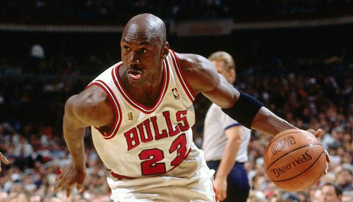

Michael Jordan needs no introduction, and has become something of a legend for turning failure into success. In fact he is the author of the longest quote on the Failure Wall, which was quite tricky to paint, but we felt it was worth the extra effort:"I've missed more than 9000 shots in my career. I've lost almost 300 games. 26 times, I've been trusted to take the game winning shot and missed. I've failed over and over and over again in my life. And that is why I succeed."Most of us don’t fail or succeed in the glare of a national spotlight, much less do it hundreds of times, with analysts endlessly critiquing every move. Perhaps that’s why humans love sports: they provide a black and white analogy for the gray battle of life. The ball is in or it’s out, the basket is made or missed, the game is won or lost. Watching our favorite stars pull through when the chips are down inspires us to do the same in our own lives. And no one has inspired more basketball fans, young and old alike, than Michael Jordan.
The story of Michael Jordan not making his high school team has been told and retold, and continues to inspire with each retelling. The facts are these: In 1978, sophomore Michael Jordan tried out for the varsity basketball team at Laney High School. When the list was posted, Jordan’s name wasn’t on it. Instead, he was asked to play on the junior varsity team.The reasoning behind the choice wasn’t that Jordan didn’t have enough talent, or hadn’t already distinguished himself as an outstanding basketball player. Rather it came down to seniority, size, and a strategic decision: The varsity team already had 11 seniors and three juniors. That left space for only one more player, and the coaches chose another sophomore, Jordan’s friend Leroy Smith. Smith was not as good as Jordan but he added size to the team, as he was 6’6 compared to Jordan’s diminutive 5’10. What’s more, the coaches knew that if Jordan had been chosen for the varsity team, he would play only when needed as a substitute for the more senior varsity players. On the junior varsity team he would get more playing time and a chance to truly develop.It was a perfectly logical choice for the coaches to assign Jordan to the junior varsity team for his sophomore year. But 15-year old Jordan was devastated when the list was posted without his name. In his mind, it was the ultimate defeat, the ultimate failure. “I went to my room and I closed the door and I cried. For a while I couldn’t stop. Even though there was no one else home at the time, I kept the door shut. It was important to me that no one hear me or see me.” Jordan was heartbroken and ready to give up the sport altogether until his mother convinced him otherwise.
Another turning point came in the bill gates life, when he was just of 16 years old; he took his little steps in the marketing business world where he failed once again. When bill gates decided to drop Harvard University and work on his strength (computer programming). Traf-O-Data was the name of his first venture with Paul Allen and Paul Gilbert. The main objective was to read the raw data from the roadways traffic counter and create reports for the traffic engineers. They engaged in developing a device to read the traffic tapes for which gates used $3400 money to purchase an Enviro-labs model GS-311 paper tape reader generated by traffic counting and produced some revenue for them so before it had have would happened the state of Washington offered free traffic processing service and ending the need for private contractors and the dream of earning some revenue came to an end. And Traf –O-Data sent letters to all the clients and saying they were suspending business. Few say, this is to be happened because the unexperienced teenagers started this business and the group failed to make an impressive money but in an interview they claimed that, they earned something great than money while doing this business and that was, experience – more valuable than anything else.
After picking himself up off the floor, Jordan did what champions do. He let his failure and disappointment drive him to be better. He played on the junior varsity team, and he worked himself to the limit. “Whenever I was working out and got tired and figured I ought to stop, I’d close my eyes and see that list in the locker room without my name on it, and that usually got me going again.”It became a pattern throughout Jordan’s life that a disappointment or setback resulted in a redoubling of effort. High school rival player Kenny Gattison, who led his team to beat Jordan’s team for the high school state championship, put it this way: “You got to understand what fuels that guy, what makes him great. For most people the pain of loss is temporary. [Jordan] took that loss and held on it. It’s a part of what made him.”The pattern of defeat followed by success would follow Jordan to the University of North Carolina and later to the NBA. His relentless drive would lead him to break numerous records and become the most decorated player in the history of the NBA. What’s more, he’s credited with dramatically increasing the popularity of basketball both in the United States and internationally, and inspiring the next generation of basketball players including Lebron James, Dwayne Wade, and Kobe Bryant. You can’t think of the word “champion” without thinking of Michael Jordan, and there’s no better proof that failure is simply a stepping stone to success.